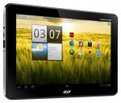
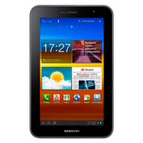
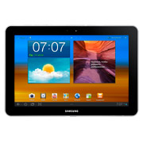

A200
Планшетный компьютер Acer Iconia Tab A200 32gb— продукт, лидирующий по качеству и надёжности среди аналогов. Чтобы убедиться в верности выбора, стоит лишь приобрести Планшетный компьютер Acer Iconia Tab A200 32gb.
GT-P6200
Основные характеристики Планшетный компьютер Samsung GT-P6200 16Gb GPS приемник Да Тип процессора S5PV310 Exynos 4210 Встроенная память 16 ГБ Диагональ/разрешение 7"/1024х600 пикс. Разрешение матрицы фотокамеры 3 МПикс
A500

Тонкий, умный и полный новаторских функций, планшет ICONIA Tab A500 работает на базе новой операционной системы Google Android 3.0 (Honeycomb), специально оптимизированной для планшетов, а также оснащен уникальным пользовательским интерфейсом от Acer для достижения абсолютно нового уровня интерактивности.
P7500
Основные характеристики Планшетный компьютер Samsung GT-P7500 64Gb Black: Модель: GT-P7500 64Gb Black Поддержка GSM 2G/3G Да Поддержка Wi-Fi Да Встроенный модуль Bluetooth 3.0